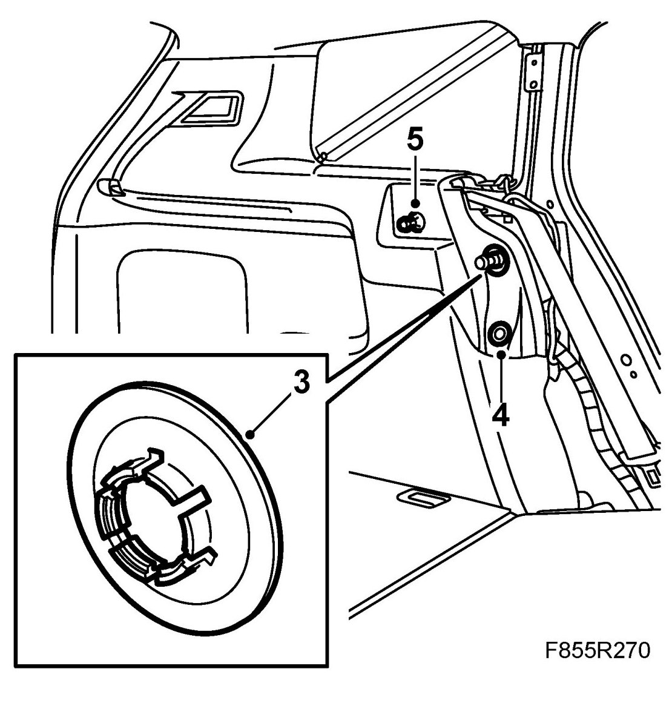
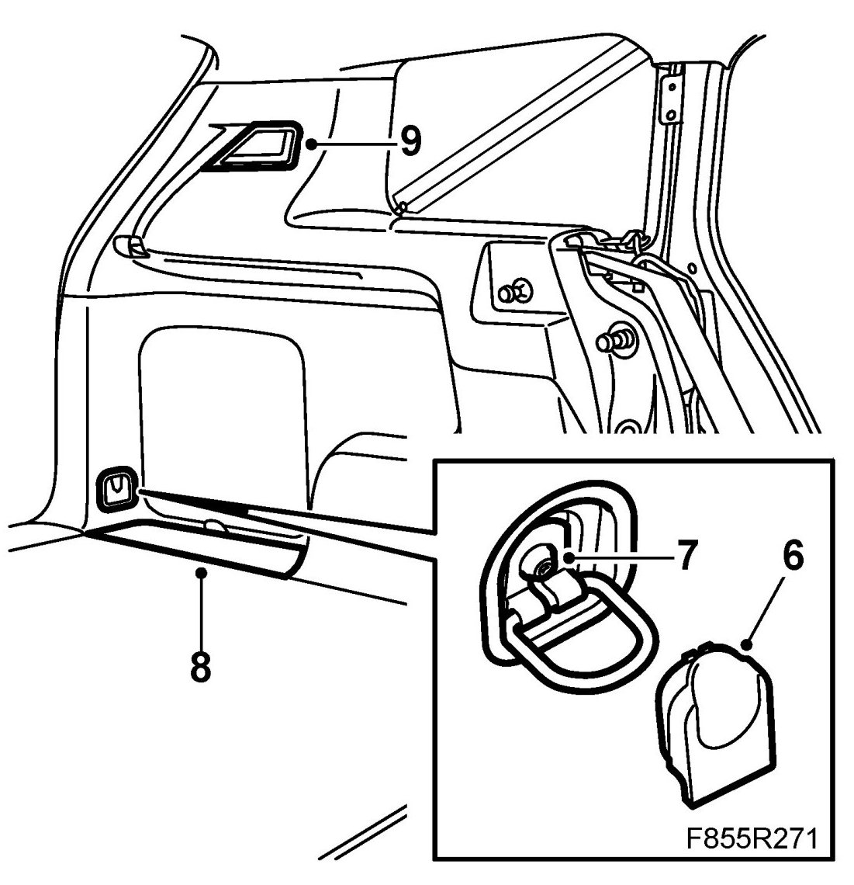
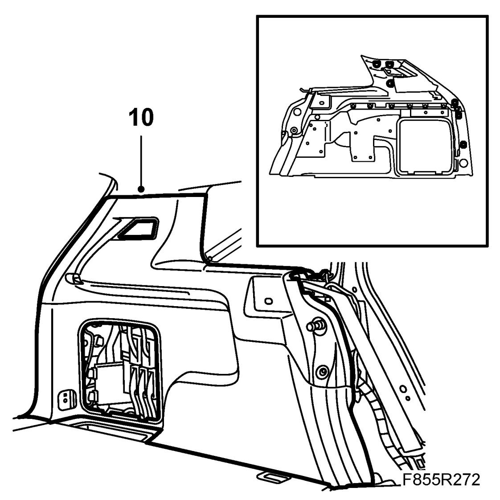
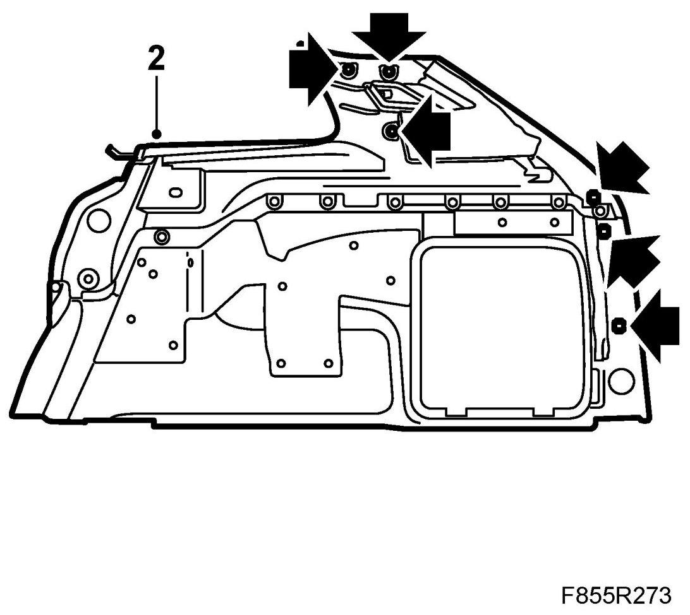
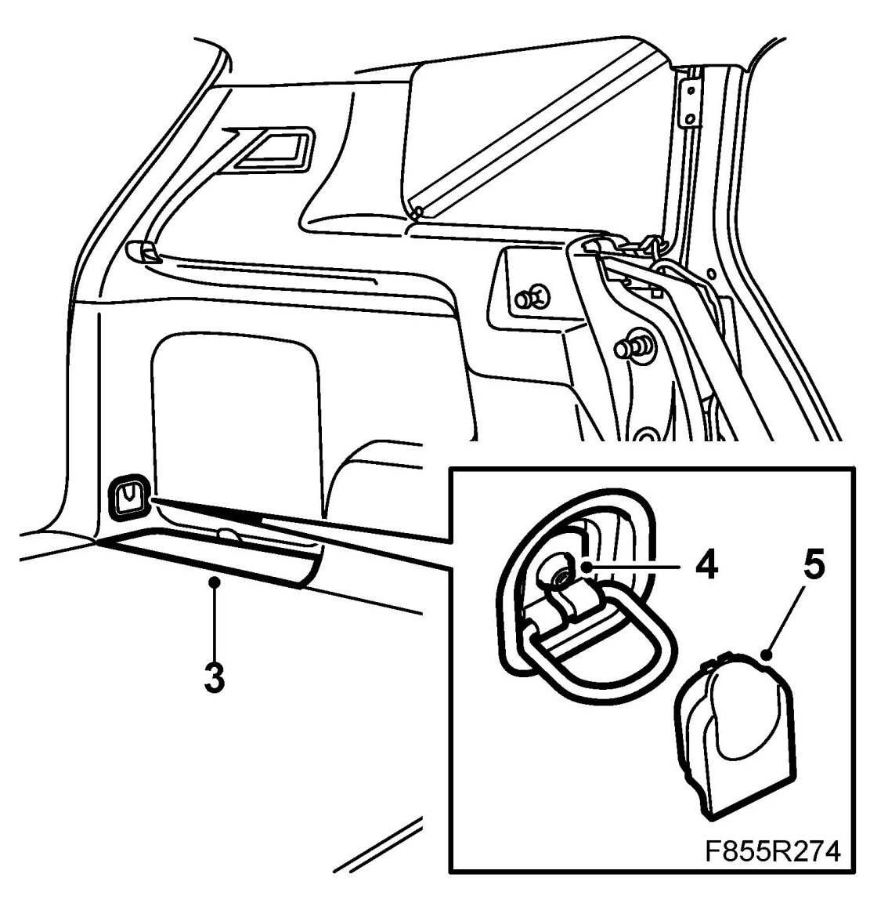
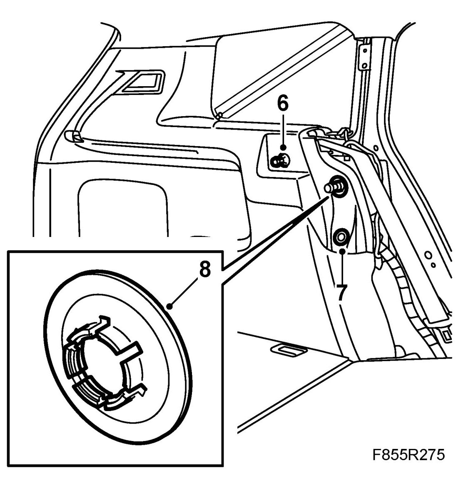

Rear Side Trim, 5D
Rear Side Trim, 5D
To remove
1. Remove C-pillar trim, 5D.
2. Remove Side bolster, 5D.
3. Remove the clip from the mounting in the body. Use a screwdriver.

4. Remove the two-stage rivet using 84 71 179 Removal tool, clips.
5. Remove the mounting for the concealing panel where appropriate.
6. Remove the cover.

7. Remove the screw.
8. Lift away the cover over the storage compartment.
9. Remove the glass from the luggage compartment light and detach the connector.
10. Pull off the trim so the clips come loose.

To fit
1. Plug in the connector for the luggage compartment lighting. Fit the glass on the luggage compartment light.
2. Fit the trim so the clips fasten.

3. Fit the cover over the storage compartment.

4. Fit the screw.
5. Fit the cover.
6. Fit the mounting for the concealing panel where appropriate.

7. Fit the two-stage rivet.
8. Fit the clips from the mounting in the body.
9. Fit Side bolster, 5D.
10. Fit C-pillar trim, 5D.